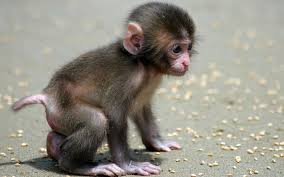

Welcome to our Animal Shelter we have a wide variety of pets to be adopted, come visit us!
Dogs
This is a Fancy dog
- Furry
- Friendly
- Two year old
- Great companion

Cats
This is a Fancy cat
- Furry
- Friendly
- One year old
- "Okay" companion
Monkeys
- Brown
- Long arms
- Throws poop
- High maintenance
